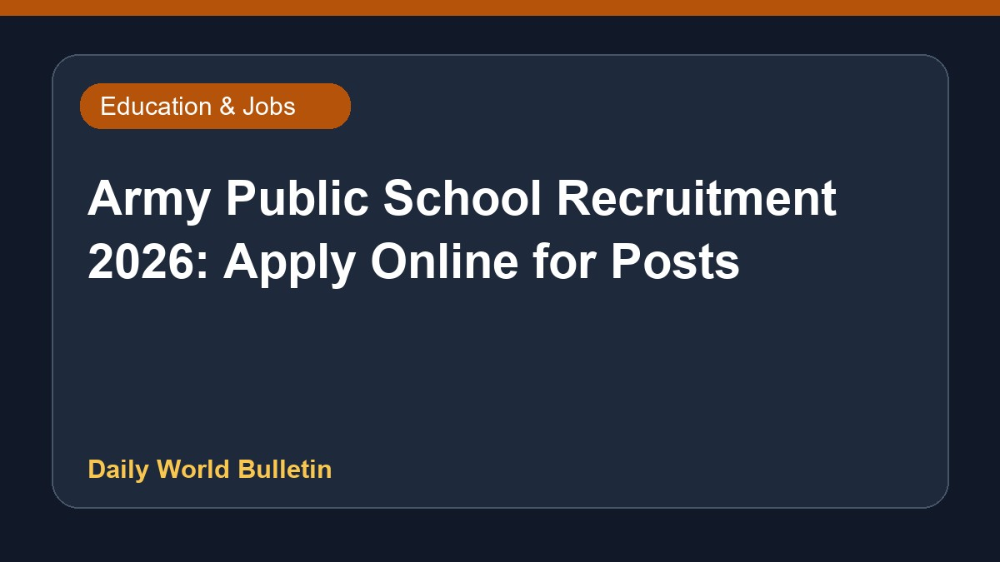

Army Public School Recruitment 2026: Apply Online for Posts

Army Public School has announced recruitment for various teaching and non-teaching positions for the year 2026. Interested candidates can check their eligibility criteria and complete the online application process through the official channels as provided by Adda247. Detailed information regarding the job openings, qualification requirements, and application procedures is currently limited in the available updates. Eligible aspirants are advised to review the official notification thoroughly before applying for these positions.
Original source: Education News Sources
Army Public School Recruitment 2026 for Teaching and Non-Teaching Posts, Check Eligibility and Apply Online - Adda247 ↗
Army Public School Recruitment 2026 for Teaching and Non-Teaching Posts, Check Eligibility and Apply Online - Adda247 ↗